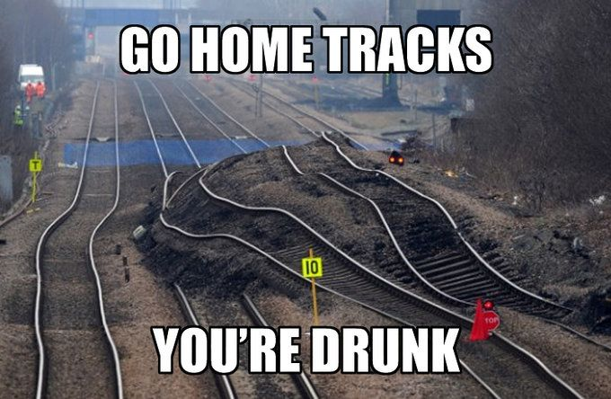
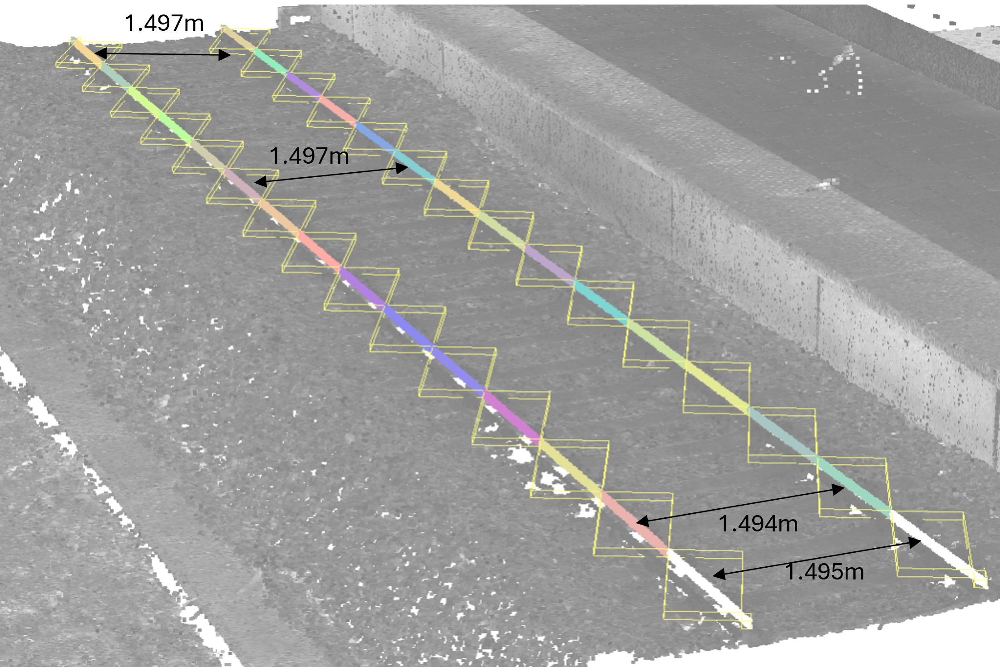
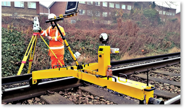

Task 8: CHOO CHOO
Type: Technical Coding + Depth + Visualization

Problem Statement
Context: Railway gauge analysis based on point cloud survey data. Reference: Infrabel Bundle 32 (Technical Specifications)
Question 1: Gauge Measurement
Extract the gauge parameter (distance between the two rails) at regular intervals of every 0.5 m along the measured section. Provide the extracted gauge values and document your methodology.
Question 2: Tolerance Compliance Visualization
Create a visualization showing:
- Which measurement points are within tolerance (shown in green)
- Which measurement points are out of tolerance (shown in red)
- The tolerance corridor boundaries
- Distance along the track on the x-axis
This visualization should clearly communicate where maintenance or track correction is needed.


Problem reference diagrams and specifications
Brief
Focus: Gauge aspect only. The broader spoor analysis documents are context only.
The original railway exercise covers many analyses (scanner accuracy, slope, centerline, cant), but for this task you only work on gauge extraction and compliance visualization.
Teams are given:
- Point cloud dataset
- Relevant specification excerpt
- Presentation showing the gauge location
Use AI to help design and implement a workflow that:
- Extracts the gauge parameter every 0.5 m
- Compares each value to tolerance
- Visualizes whether each location is in or out of tolerance
Rules
- Focus on gauge only
- Emphasize both technical depth and clear visualization
- Backend code and visual output are both part of the challenge
- Teams may simplify the pipeline if they explain their assumptions
Deliverables
- Extracted gauge values
- Tolerance classification
- Visualization along the section
- "How we did it" documentation
Scoring Criteria
- Technical Depth: Is the approach sound and sophisticated?
- Correctness: Are calculations and logic correct?
- Visualization Quality: Is the output clear and readable?
- Robustness: Is the workflow well-structured?
What It Teaches
- AI for pipeline design
- AI for code generation and debugging
- AI for linking standards/specifications to data workflows
- Turning spatial data into interpretable engineering outputs
Data and Resources
Download Point Cloud Dataset
Submission
Submit Solution & Report